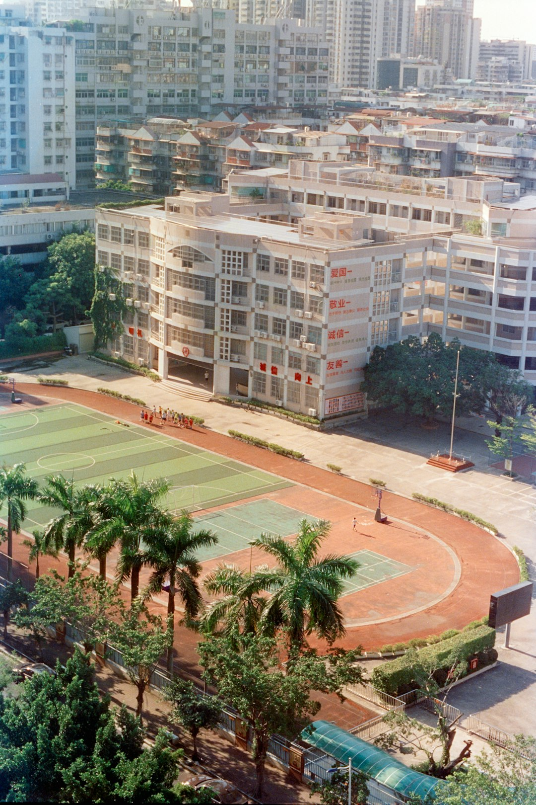

Destacada

Evento deportivo escolar
Participación estudiantil en actividades intercolegiales que fortalecen disciplina, trabajo en equipo y orgullo institucional.
El Instituto Técnico Morazán participó en actividades deportivas intercolegiales que fortalecen el trabajo en equipo, la disciplina y el sentido de pertenencia institucional entre nuestros estudiantes.
Durante la jornada, los distintos equipos representaron al instituto con entusiasmo, compromiso y espíritu deportivo, promoviendo la sana convivencia y el desarrollo integral más allá del aula.
Este tipo de experiencias complementa la formación académica y refuerza valores como el respeto, la constancia y la participación activa dentro de la comunidad educativa.